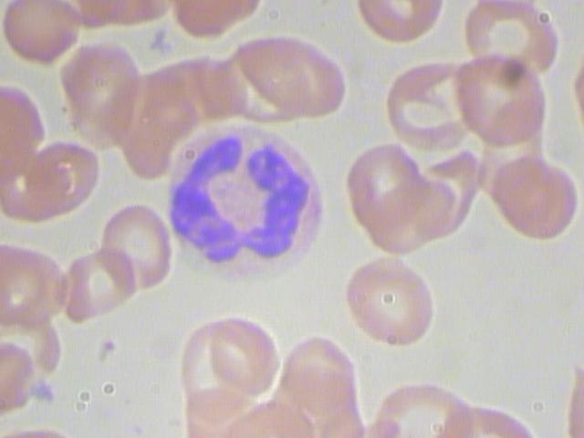
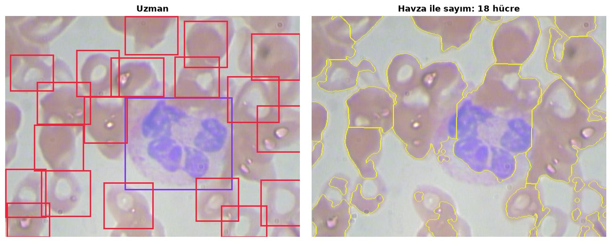
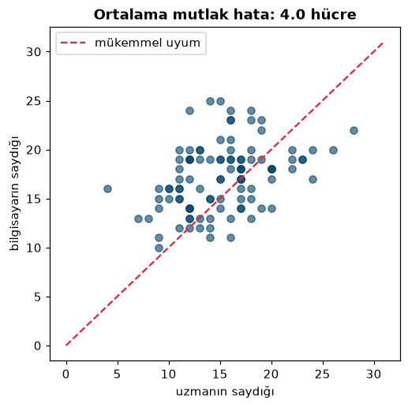
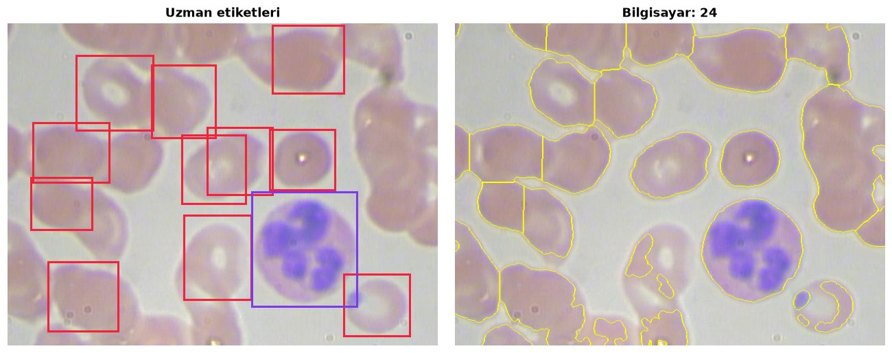
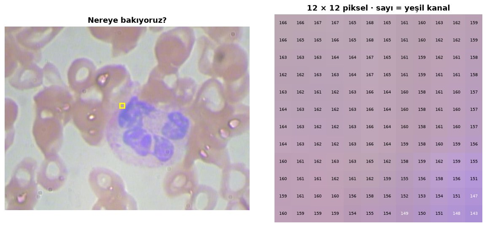
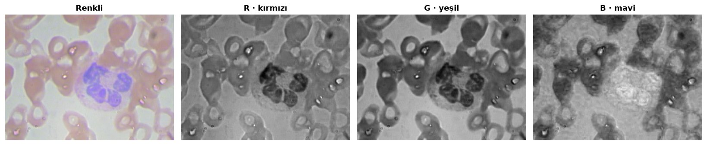
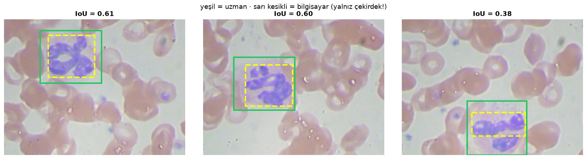
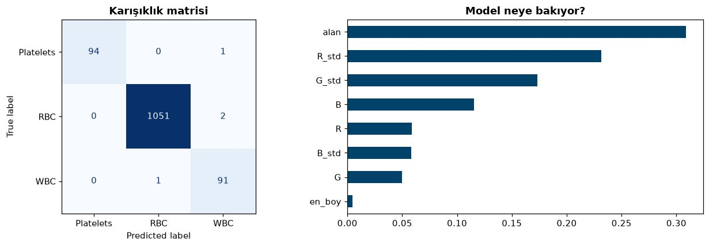

▶
#@title ▶ 1 · BCCD veri setini indir
Dr. Öğr. Üyesi Ramazan Özgür Doğan
Trabzon Üniversitesi · Yapay Zekâ Mühendisliği · PharmAI KTÜ
Uygulamalı Eğitimle Sağlık Araştırmalarında Yapay Zekâ ve Hukuki Çerçevesi
Kod yazmanız gerekmiyor. Hedef: neyin mümkün olduğunu görmek ve kendi sorunuzu bir yapay zekâ projesine çevirebilmek.
Verinin laboratuvardaki hikâyesi: nasıl üretilir, nasıl etiketlenir, hangi tuzaklar modeli yanıltır?
Kan yayması görüntüsünü 5 saniye göstereceğim. Alyuvarları ve akyuvarları içinizden sayın!
Tahminler? 🙋 En yakın tahmin alkışı hak eder.
Bir uzmanın saatlerini alan binlerce görüntü dakikalar içinde.
Aynı görüntü → her seferinde aynı sonuç. Yorgunluk, dikkat dağınıklığı yok.
“Biraz büyük” yerine ölçülen alan, yoğunluk, şekil.
Gözün fark etmediği ince desenler, 3B yapı, zaman içindeki değişim.
Bilgisayar bir mikroskop fotoğrafında aslında ne “görür”?
Her pikselde R(kırmızı) G(yeşil) B(mavi): 0 (karanlık) … 255 (parlak). Tüm yapay zekâ bu sayılarla çalışır.
…ve grubumuzun bu sınırları aşmak için ürettiği veri setleri ve yöntemler
Büyütme arttıkça alan derinliği incelir: hücrelerin bir kısmı net, kalanı bulanık.
EDOF (genişletilmiş odak derinliği): farklı odaklarda çekilmiş kareleri her yeri net tek görüntüde birleştirmek.
Ortak payda: önce veri seti, sonra model. Hazır veri sorumuzu cevaplamıyorsa, kendimiz üretiyoruz.
Ne var? Aynı alanın farklı odaklarda çekilmiş kareleri.
Soru: Hepsini tek, her yeri net görüntüde birleştirebilir miyiz?
Ne var? Uzmanın piksel piksel çizdiği hücre sınırları.
Soru: Her hücrenin sınırını otomatik bulabilir miyiz?
Ne var? İnsan keratinosit (deri) hücre hattı görüntüleri.
Soru: Kültürdeki hücreleri ayırt edip ölçebilir miyiz?
Ne var? Kan hücrelerinin odak yığınları.
Soru: Tek mikroskopla hücrenin 3B şeklini çıkarabilir miyiz?
Görüntü + “doğru cevap” (etiket) + hikâyesi (meta veri)
…

Önce kural yazarak, sonra örnekten öğreterek
Her pikselin kenara uzaklığı = dağ yüksekliği. Ters çevirip çukurları suyla doldurunca, suların buluştuğu çizgi iki hücrenin sınırıdır.



🎓 Ders: “Doğru cevap” sandığımız etiketler de hata içerir. Modelin kalitesi, etiketin kalitesini geçemez.
✓ Az veriyle çalışır, açıklanabilir
✗ Her yeni koşulda kurallar elle güncellenir
✓ Karmaşık desenleri kendisi bulur
✗ Çok sayıda ve doğru etiketli örnek ister
⬇ Kodlayıcı görüntüyü küçültür, “ne var?” sorusunu cevaplar.
⬆ Kod çözücü büyütür, “nerede?” sorusunu piksel piksel cevaplar.
↔ Köprüler ince ayrıntıyı (hücre kenarı) doğrudan taşır.
Tespitte genelde IoU ≥ 0,5 ise “buldu” sayılır. Uygulamada akyuvar için bunu hesaplayacağız.
Laboratuvardaki sorunuz hangi yapay zekâ görevine karşılık geliyor?
15:00'te Google Colab'da buluşuyoruz. Aradan önce defteri açın:
⚠️ “Bu not defteri Google tarafından yazılmadı” uyarısı → Yine de çalıştır
💾 Değişiklikleriniz kalsın: Dosya → Drive'a kopya kaydet
⏩ Hepsini birden: Çalışma zamanı → Tümünü çalıştır (Ctrl + F9)
🧯 Bir şey bozuldu mu? Çalışma zamanı → Oturumu yeniden başlat, sonra baştan çalıştırın.
🩺 Kodu anlamak zorunda değilsiniz; her adımın açıklaması hücrenin üstünde.
Adımlara tıklayıp nerede olduğumuzu işaretleyebiliriz ✓


y, x = 200, 300 satırını değiştirin. Hücrenin içi ile arka planın sayıları nasıl farklı?| dosya | sınıf | xmin | ymin | xmax | ymax |
|---|---|---|---|---|---|
| …00000.jpg | WBC | 260 | 177 | 491 | 376 |
| …00000.jpg | RBC | 78 | 336 | 184 | 435 |
| …00000.jpg | RBC | 63 | 237 | 169 | 336 |
| … toplam 4.888 satır | |||||
kutulari_ciz(...) içine başka bir dosya adı verin.hucre_say(img, min_mesafe=36) → 20 ya da 50 yapın. Hücreler nasıl bölünüyor?min_alan=900 → 300 yapın. Küçük parçalar da sayılırsa ne olur?

Her kutudan 8 sayı (renk ortalamaları, renk oynaklığı, alan, en-boy) → model %99,7 doğru. En önemli ipucu: alan.
Sonuç kötü mü? Çok normal! Kurallar BCCD'ye göre ayarlandı: farklı boya, büyütme ve ışık = farklı sayılar. İşte bu yüzden kendi veri setiniz gerekir.
🔒 Hasta verisi yüklemeyin: Colab bir bulut hizmetidir. Kimliksizleştirilmemiş tıbbi veri için kurumunuzun kurallarına uyun.
Pilot veriniz, ilk projenizin tohumu olabilir.
Görüntü bir sayı tablosudur.
Sorunuz etiket türünü belirler.
Kural (eşik, havza) az veriyle hızlı başlatır.
Öğrenme, iyi etiketli çok veri ister.
Doğruluk tek başına yanıltır.
Hücreden canlıya: sedef hastalığı modeli ve PCL-PASI veri seti
doganr.com · pharmaiktu.github.io · Teşekkürler! 🙏